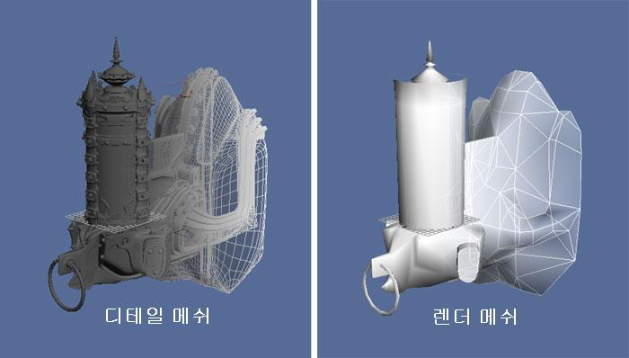
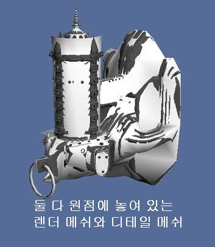
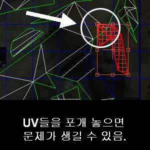
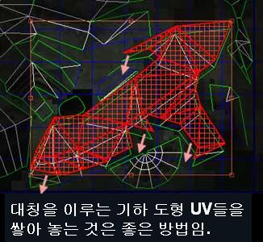

UDN
Search public documentation:
ImportingStaticMeshTutorialKR
English Translation
日本語訳
中国翻译
Interested in the Unreal Engine?
Visit the Unreal Technology site.
Looking for jobs and company info?
Check out the Epic games site.
Questions about support via UDN?
Contact the UDN Staff
日本語訳
中国翻译
Interested in the Unreal Engine?
Visit the Unreal Technology site.
Looking for jobs and company info?
Check out the Epic games site.
Questions about support via UDN?
Contact the UDN Staff
스태틱 메시 파이프라인 튜토리얼
개요
실시간 범프 매핑: 디테일 메시와 렌더 메시

생성된 노멀맵은 UE3에서 로우폴리 "Render" 메시에 적용됩니다. 최종 결과는 폴리곤 측면에서 볼 때 실제보다 훨씬 복잡해 보이는 메시가 됩니다.익스포트할 콘텐츠 준비하기

이는 SHTools 프로세스가 렌더 메시의 언래핑에 따라 달라지기 때문에 중요합니다.UV에 대해 몇 가지
노멀 매핑 프로세스는 고려해야 할 특수 언래핑이 있습니다. 최선의 결과를 내려면 UV가 겹치지 않아야 합니다. UV를 쌓아놓는 것도 관련된 지오메트리가 기하학적으로 동일하다면 괜찮습니다. 예를 들어 메시 여러 부분이 (다음 그럼처럼) 겹치는 것은 좋지 않습니다:
아래처럼 서로 좌우대칭 지오메트리의 경우 UV 를 쌓아놔도 좋습니다:
디테일 메시에는 이러한 제약을 적용할 필요가 없습니다. 디테일 메시는 SHTools 프로세스가 기능하는 데 있어 텍스처링할 필요가 전혀 없기 때문입니다.노멀맵 생성하기
디테일 메시로부터 노멀맵을 생성 과정은 SHTools 플러그인, 아니면 3DStudio Max, Maya 또는 Softimage XSI 툴로 이루어 집니다. 여기서는 단계별로 간단히 설명하겠습니다. 한 가지, SHTools 메시 프로세서와 서버는 Max/Maya/XSI 에 자체 매핑 툴이 생기기도 전에 완성되었다는 점 참고하시기 바랍니다. 그러한 툴은 보통 노멀맵 제작용으로 사용합니다. 노멀맵을 만들 때는 Maya 등의 3D 모델링 패키지를 사용할 것을 강력 추천합니다.지오메트리 익스포트하기
엔진에 콘텐츠 임포트하기
머티리얼 적용하기
 스태틱 메시 에디터로 되돌아가 "Use" 버튼을 눌러 현재 선택되어 있는 머티리얼을 적용합니다. 이제 그 머티리얼이 메시에 나타나야 합니다. 나머지 머티리얼 슬롯들에 대해서도 이 과정을 되풀이합니다.
스태틱 메시 에디터로 되돌아가 "Use" 버튼을 눌러 현재 선택되어 있는 머티리얼을 적용합니다. 이제 그 머티리얼이 메시에 나타나야 합니다. 나머지 머티리얼 슬롯들에 대해서도 이 과정을 되풀이합니다.
콜리전
스태틱 메시 액터 사용하기
- 콘텐츠 브라우저 에서 StaticMesh 를 선택합니다.
- 레벨을 오른 클릭하여 'Add Actor'로 간 다음 'Add StaticMesh'를 선택합니다. 레벨에 메시가 나타날 것입니다.